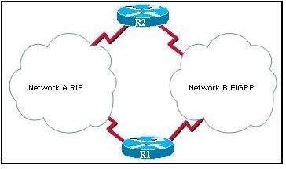
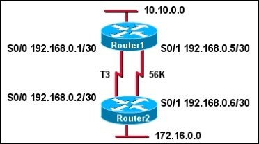
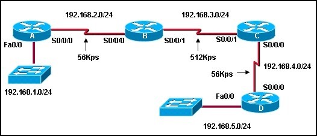

Chapter 3 – CCNA 2
01. Which two statements correctly describe the concepts of administrative distance and metric? (Choose two.)
- Administrative distance refers to the trustworthiness of a particular route;
- A router first installs routes with higher administrative distances;
- The value of the administarive distance can not be altered by the network administrator;
- Routes with the smallest metric to a destination indicate the best path;
- The metric is always determined based on hop count;
- The metric varies depending which Layer 3 protocol is being routed, such as IP or IPX;
02.  Refer to the exhibit. Which statement correctly describes how R1 will determine the best path to R2?
{kind=link}
- R1 will install a RIP route using network A in its routing table because the administrative distance of RIP is higher than EIGRP;
- R1 will install a RIP route using network A in its routing table because the path cost from RIP is lower than EIGRP;
- R1 will install an EIGRP route using network B in its routing table because the administrative distance of EIGRP is lower than RIP;
- R1 will install an EIGRP route using network B in its routing table because the path cost from EIGRP is lower than RIP;
- R1 will install an EIGRP route and a RIP route in its routing table and load balance between them;
03. Which two statements are true regarding classless routing protocols? (Choose two.)
- sends subnet mask information in routing updates;
- sends complete routing table update to all neighbors;
- is supported by RIP version 1;
- allows for use of both 192.168.1.0/30 and 192.168.1.16/28 subnets in the same topology;
- reduces the amount of address space available in an organization;
04. Which command would the network administrator issue to determine if load balancing is in effect on a router?
- show ip protocols;
- show ip route;
- show ip interface brief;
- show ip interface;
05. Which two conditions would create a setting where the use of a distance -vector routing protocol would be efficient? (Choose two.)
- the network requires a special hierarchical design;
- fast convergence of the network is crucial;
- the network is using a hub and spoke topology;
- the network is using a flat design;
- there are more than 15 hops between the most distant routers;
06. What is the purpose of a routing protocol?
- It is used to build and maintain ARP tables;
- It provides a method for segmenting and reassembling data packets;
- It allows an administrator to devise an addressing scheme for the network.
- It allows a router to share information about known networks with other routers;
- It provides a procedure for encoding and decoding data into bits for packet forwarding;
07. Which of the following best describes the operation of distance vector routing protocols?
- They use hop count as their only metric;
- They only send out updates when a new network is added;
- They send their routing tables to directly connected neighbors;
- They flood the entire network with routing updates;
08. When multiple routing protocols have a route to the same destination network, what determines which route is installed in the routing table?
- best metric;
- lowest hop count;
- greatest available bandwidth;
- lowest administrative distance;
- lowest cost;
09. Why is fast convergence desirable in networks that use dynamic routing protocols?
- Routers will not allow packets to be forwarded until the network has converged;
- Hosts are unable to access their gateway until the network has converged;
- Routers may make incorrect forwarding decisions until the network has converged;
- Routers will not allow configuration changes to be made until the network has converged;
10. Which of the following conditions must be met in order for a network to have converged?
- The routers in the network are operating with dynamic routing protocols;
- The routers in the network are operating with compatible versions of IOS;
- The routers in the network are operating with the same routing tables;
- The routers in the network are operating with consistent routing knowledge;
11. Which two statements are true regarding metrics? (Choose two.)
- RIP uses bandwidth as a metric;
- OSPF uses delay as a metric;
- EIGRP uses bandwidth as a metric;
- OSPF uses cost based on bandwidth as a metric;
- RIP uses delay as a metric;
- EIGRP uses hop count only as a metric;
12. Which two statements are true regarding the advantages of the use of static routes? (Choose two).
- increased security;
- reduced effort in configuring routes;
- the administrator maintains control over routing;
- easier to implement in a growing network;
- reduces the chance of routing errors;
- increased router resource usage;
13. The following line of code is displayed in a routing table:
R 209.165.201.0/24 [120/2] via 192.168.252.2, 00:00:16, S0/0/0 What can be concluded from this output?
- A packet destined for host 192.168.252.2 will be forwarded out the interface connected to network 209.165.201.0/24;
- The value, 120, is used to determine the best path when a router has more than one routing protocol configured for the same destination network;
- This route was manually configured using the ip route command;
- 192.168.252.2 is an interface on the router that produced this output;
14. What will be the result of the following commands?
ORL(config)# interface fastethernet 0/0
ORL(config-if)# ip address 172.16.3.1 255.255.255.0
ORL(config-if)# no shutdown
- The 172.16.3.0 network will be routed by any dynamic routing protocol automatically;
- A routing table entry is made to the 172.16.3.0 network with a code of “C”;
- A static route is required to route traffic to the 172.16.3.0 network;
- The commands will be saved to the startup-configuration automatically;
15. An engineer creates a static route by entering the Router(config)# ip route 10.0.0.0 255.255.255.0 192.168.1.2 command. What can be concluded about this route?
- The administrative distance of this route is 1;
- 192.168.1.2 is the address of an interface on this router;
- This route will display as a directly connected network in the routing table;
- Packets with a destination IP address of 192.168.1.2 will be forwarded to the 10.0.0.0/24 network first.
16.  Refer to the exhibit. Router1 and Router2 are running EIGRP. All interfaces are operational and packets can be forwarded between all networks. What information will be found in the routing table for Router1?
{kind=link}
- Router1 will have 6 directly connected networks;
- The administrative distance of the route to network 172.16. 0.0 will be 90;
- The metric for routes to 172.16.0.0 will be 1;
- The interface that is used to forward packets to 172.16.0.0 will always be the S0/1 interface;
17. The following line of code is present in the routing table:
O 10.16.1.0/27 [110/129] via 192.168.1.5, 00:00:05, Serial0/0/1 What does the number 129 indicate in this output?
- The cost for this link has a value of 129;
- The clock rate on this serial interface is set to 129,000;
- The next-hop router is 129 hops away from this router;
- This route has been updated 129 times in this routing table;
18. A growing medium-sized manufacturing company recently began to have routing instability issues. The company uses static routes and has a mixture of over 30 Cisco and non- Cisco routers. The network administrator has decided to convert the network to dynamic routing. What characteristics of protocols should be considered in this selection process?
- Distance vector routing protocols, such as RIP, converge more quickly than do link-state routing protocols;
- EIGRP can be used on all of the routers in the company;
- OSPF can be used between the routers;
- An exterior routing protocol, such as BGP, is recommended for growing companies;
19.  Refer to the exhibit. If RIP is the routing protocol, what is the value of the metric from router A to network 192.168.5.0/24?
{kind=link}
- 3;
- 4;
- 56;
- 624;
- 724;
20. A router learns two paths with equal metrics to a destination network via the RIP routing protocol. How will the router handle packets to the destination network?
- The router will install the first route it learned into the routing table;
- The router will install both routes in the routing table and load balance between the two;
- The router will put the first route in the routing table, and denote the second route as a backup route;
- The router will pick the path with the higher bandwidth and will place it in the routing table;